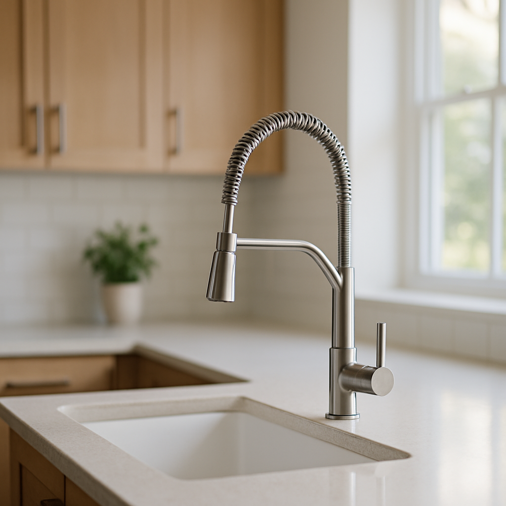
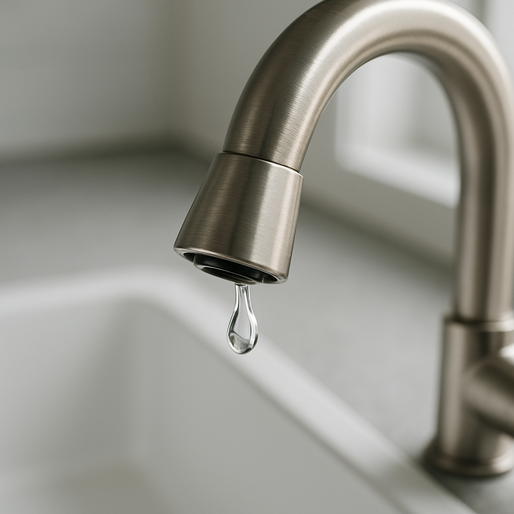
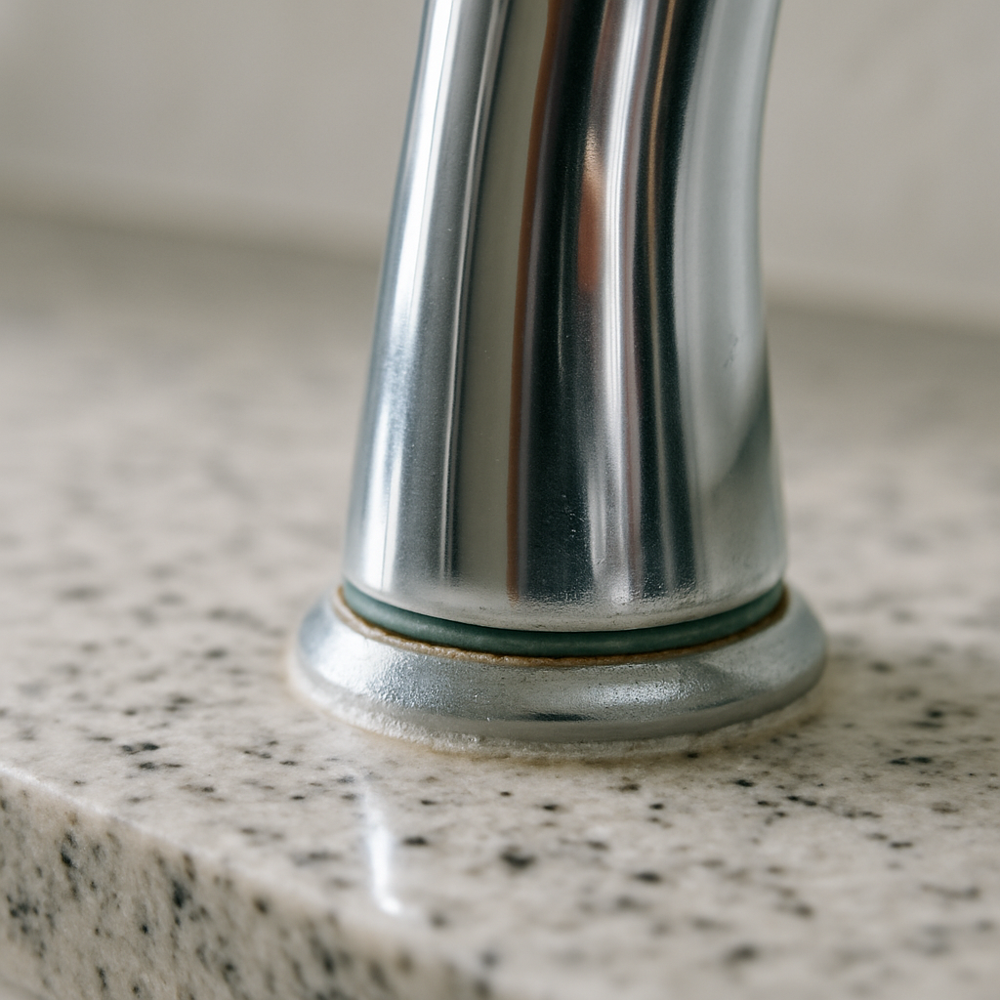
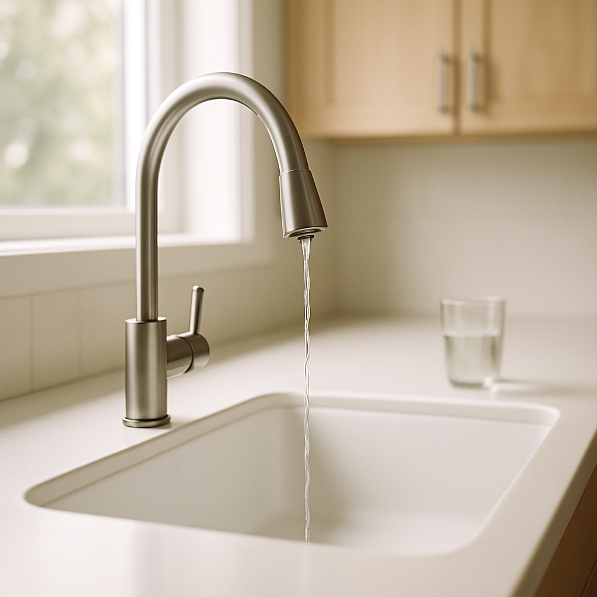
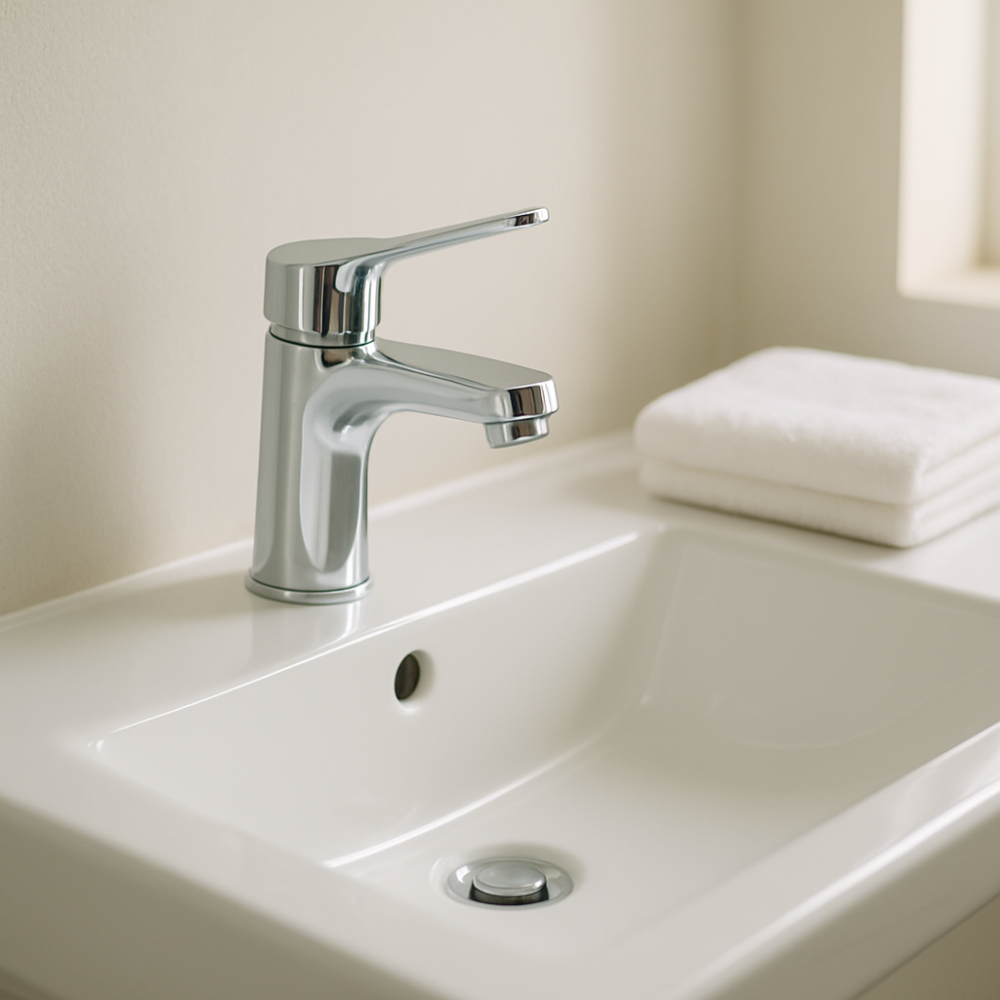
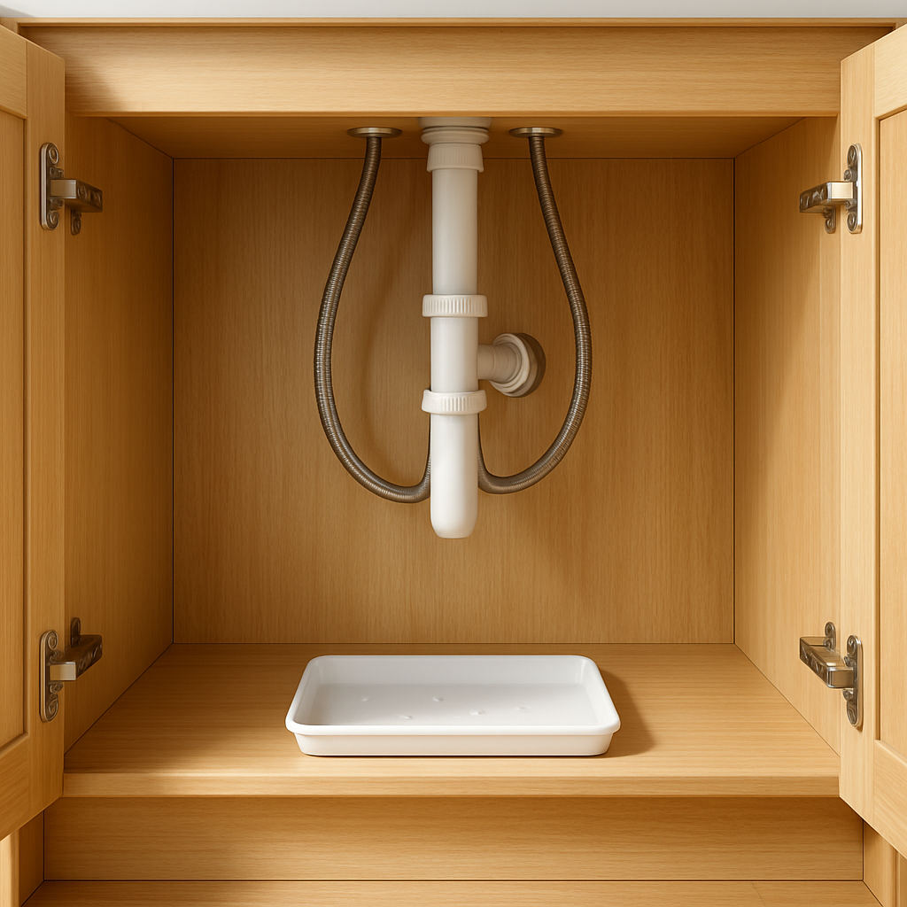

5 signs your faucet needs replacing
Hi, I'm Fixa. A faucet rarely dies all at once — it warns you for months first. Here are the five signs I tell every homeowner to watch for, what's actually breaking inside, and the dollar math on whether to fix it or swap it.

1. A drip that won't quit

The classic late-night plink from the kitchen sink isn't just annoying. A faucet that drips once a second wastes more than five gallons of water a day — that's over 1,800 gallons a year, and your water bill notices.
Inside almost every drip is the same cheap part. On an older two-handle faucet, a rubber washer sits at the base of each handle stem; when it hardens or tears, water sneaks past and out the spout. On a modern single-handle faucet, the same job is done by a cartridge — a plastic-and-rubber cylinder you can pull out of the handle and replace as one piece. Both parts wear out from simple friction and hard-water grit.
The fix-it math: a washer or cartridge runs $10 to $30 and takes 15 to 30 minutes with an adjustable wrench. A mid-range new faucet runs $150 to $250. If your faucet is under ten years old and this is the first drip, swap the part. If you've already replaced the cartridge once on the same faucet, don't do it again — you're past the point where one fresh seal saves the day.
2. Rust, green crust, or weird discoloration

Look closely where the faucet meets the sink and around the base of the spout. See orange-brown spots, chalky white buildup, or a greenish crust? That's your faucet telling you it's tired.
The orange-brown is rust, usually from steel parts inside a faucet that's been wet for a decade. The white chalk is mineral buildup from hard water, common across most of the US. The greenish crust is corroded brass or copper, which starts once the protective finish wears thin.
Surface gunk you can scrub away. But if corrosion is creeping under the handle or the finish flakes off in your hand, the metal underneath is breaking down. A cheap zinc alloy body typically gives up at 5 to 10 years; solid brass or 304 stainless lasts 15 to 20. Once the body itself is corroding, no new cartridge keeps it sealed — the housing leaks around the cartridge, not through it. That's a replacement, not a repair.
3. Low or uneven water pressure

Turn the faucet on full. Does the water trickle, spit, or shoot off to one side? Healthy faucets give you a steady, even stream.
Start with the easiest fix. The little screen on the tip of the spout is called an aerator, and it clogs with grit and mineral chips over the years. Unscrew it by hand — or with pliers wrapped in a cloth so you don't scratch the finish — rinse it under a strong stream, and screw it back on. About half the "low pressure" complaints I see end right there, for the price of zero parts.
If the aerator is clean and the flow is still weak, the next suspect is the cartridge (mineralized inside) or the angle stops under the sink (those little oval valves on the supply lines — they can crust shut). A cartridge swap is cheap; partially-closed stops are free. But if you've tried both and the flow is still pathetic, the faucet body is restricting the water on its own, and that's the end of the road for that fixture.
4. The handle feels loose, stiff, or wobbly

A faucet handle should feel firm and turn smoothly. When it starts to wiggle, grind, or take two hands to budge, something inside is wearing out.
A loose handle usually means the screw or set-pin under the decorative cap has worked itself free. Pop the cap off — most lift with a fingernail or a small flathead — tighten the screw a quarter-turn, and you're done. Total cost: nothing.
A stiff or grinding handle is the bigger tell. That points to a cartridge fused with mineral scale or to corrosion inside the faucet body. A new cartridge sometimes rescues it. But if you're already on your second cartridge in two years, or the handle is grinding because the body is corroded, no fresh seal stays smooth for long. At that point, the whole faucet is the answer.
5. Mystery puddles under the sink

Open the cabinet under your sink and feel along the base of the faucet, the braided supply lines running up to it, and the cabinet floor. Damp spots, a faint mildew smell, or warped wood? Those are real warning signs.
Under-sink leaks are sneaky. They drip slowly, soak into the cabinet floor, and stay invisible from the counter until the damage is done. Three common culprits, in order of how often I see them: a cracked or bulging supply line (those braided steel hoses have an inner polymer tube that quietly degrades — most should be swapped every 8 to 10 years), a worn gasket where the faucet base seats against the sink, or a hairline crack in the faucet body itself.
Supply lines are the cheap one — a pair runs about $15 and swaps in ten minutes after you shut the angle stops. A gasket means pulling the faucet partway out, which is doable but fiddly. A cracked body means full replacement; no patch holds for long under daily water pressure. Either way, move fast — cabinet rot and mold get expensive in a hurry, and a soaked particle-board cabinet floor is roughly $300 to $700 to replace.
When repair makes sense — and when it doesn't
Here's my rule of thumb, the one most plumbers I trust use: if the repair runs more than 30% of a new faucet, replace the faucet.
That math is simpler than it looks. A new mid-range kitchen faucet is $150 to $250. Thirty percent is roughly $50 to $75 in parts and labor. A cartridge ($10-$30 DIY) or a pair of supply lines ($15) sits comfortably under that line. A second service call to chase a recurring leak doesn't — a plumber's typical visit runs $150 to $250 all-in, which is the cost of the new faucet on its own.
The other half of the rule is age. If your faucet is under ten years old, from a brand that's still around, and only one thing is wrong, fix it. Once it's past ten and you're seeing two or more signs at once — drip plus visible corrosion, stiff handle plus low pressure — it's near the end. Patching one symptom buys a few months before the next one shows up. A clean replacement saves you the second trip.
One more thing
A faucet swap isn't the hardest plumbing job, but it means shutting off the water, lying on your back inside a tight cabinet, and getting the seal right so it doesn't leak from day one. If that's not your idea of a fun Saturday, I can find a background-checked fixer in your area to handle it — usually a same-week visit, honest price up front.
Whichever way you go, don't wait for the drip to turn into a flood. Faucets give you plenty of warning. Listen to yours.